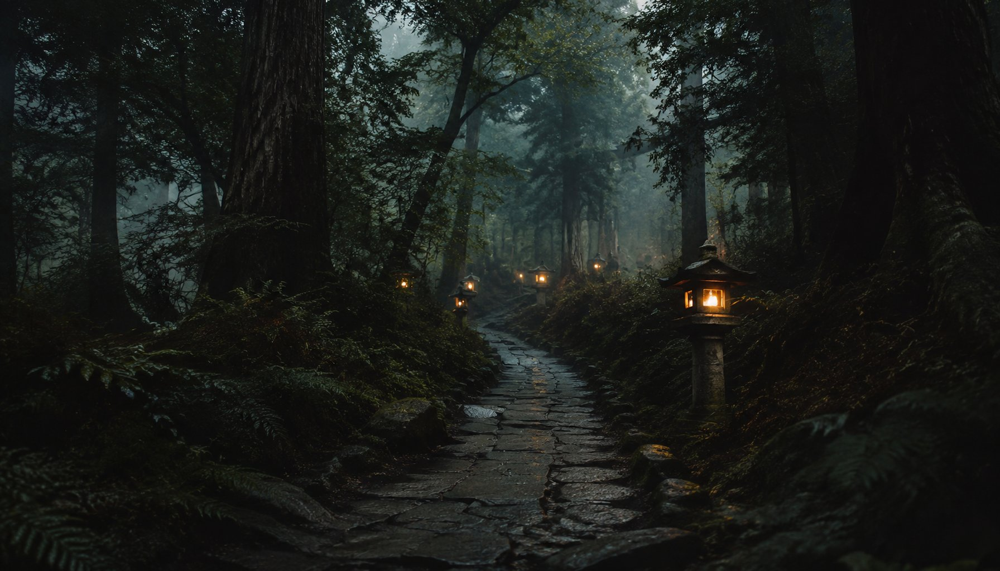
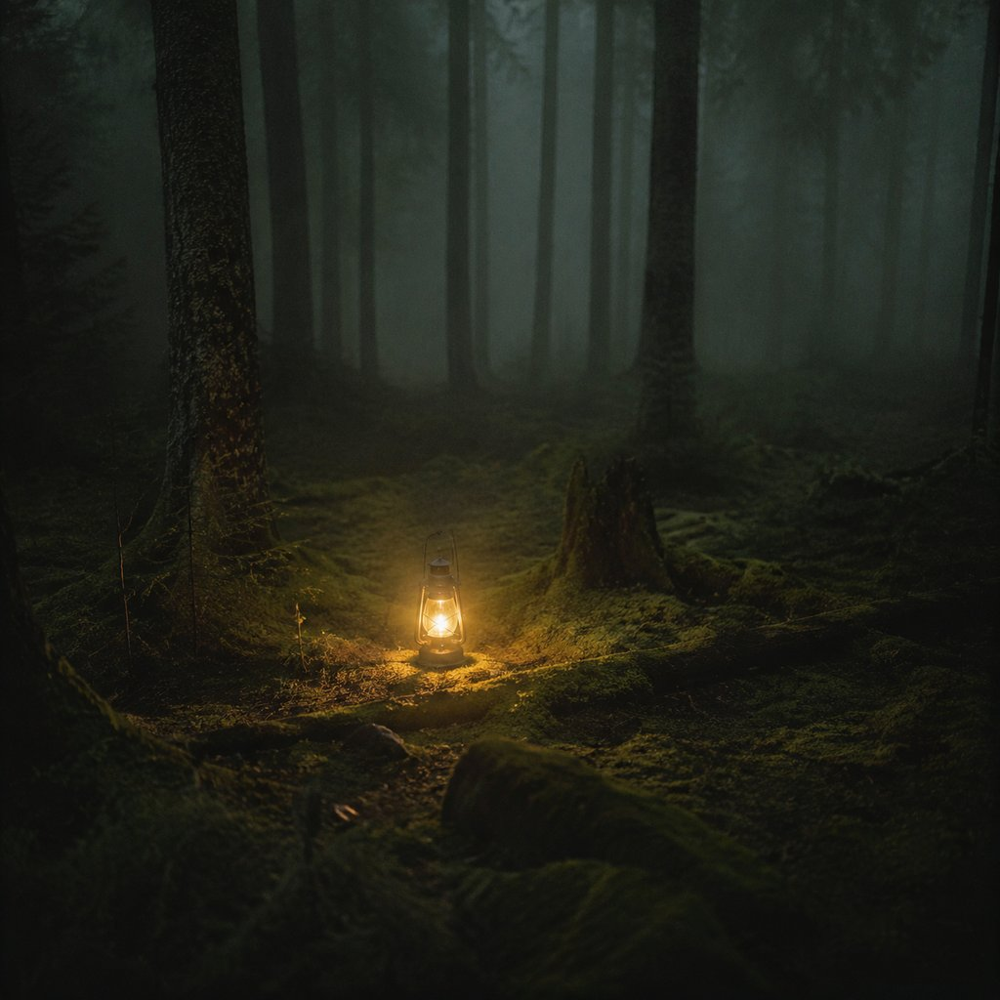
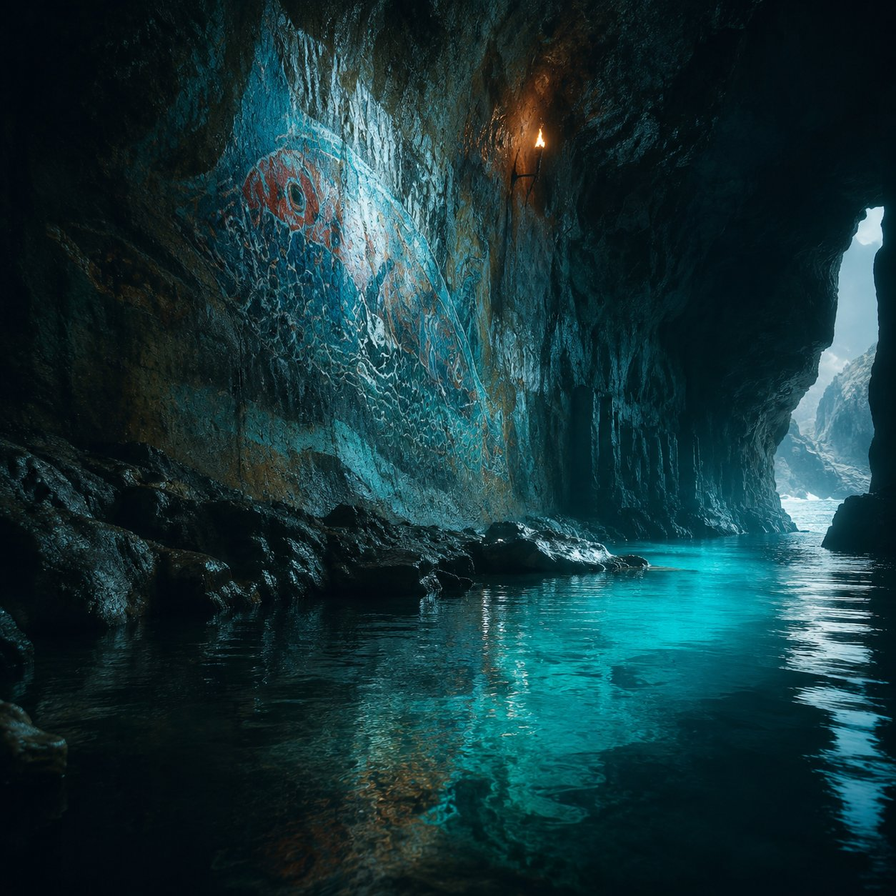
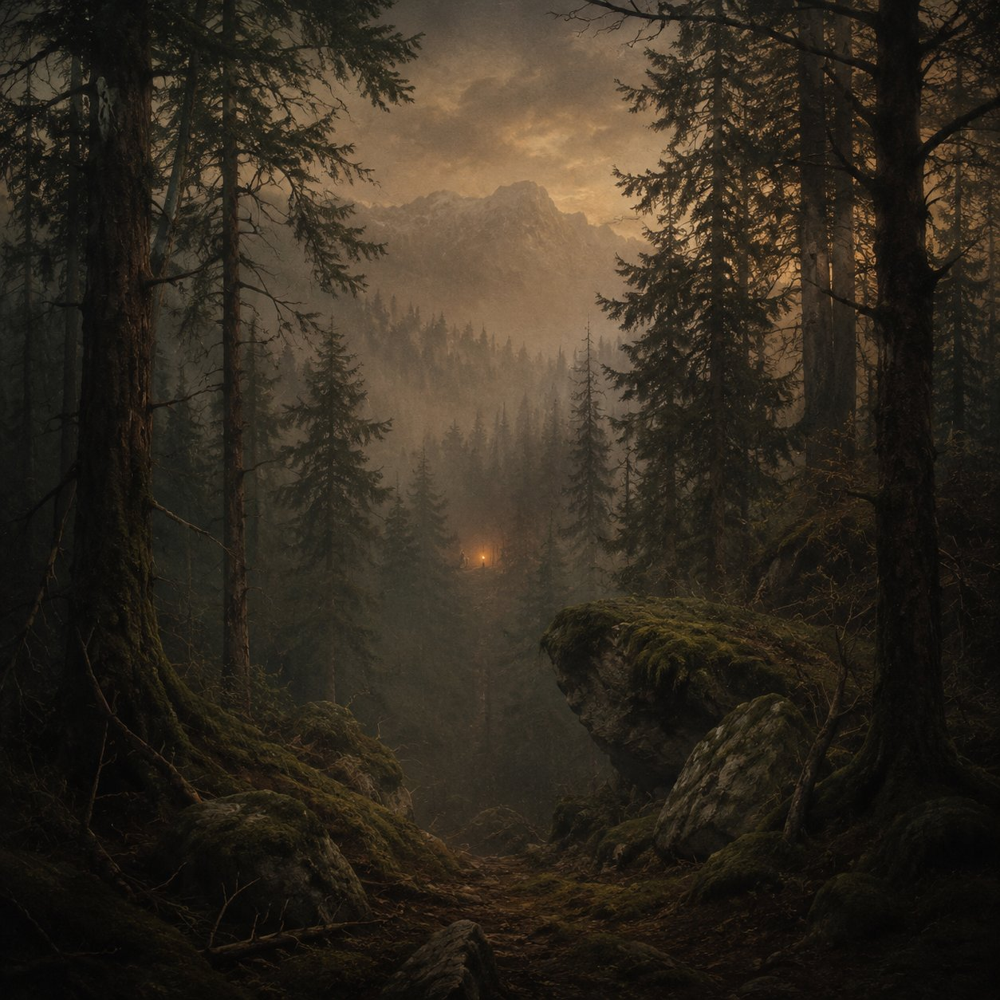
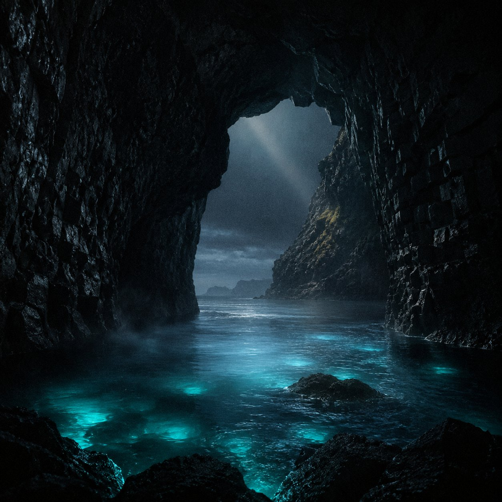
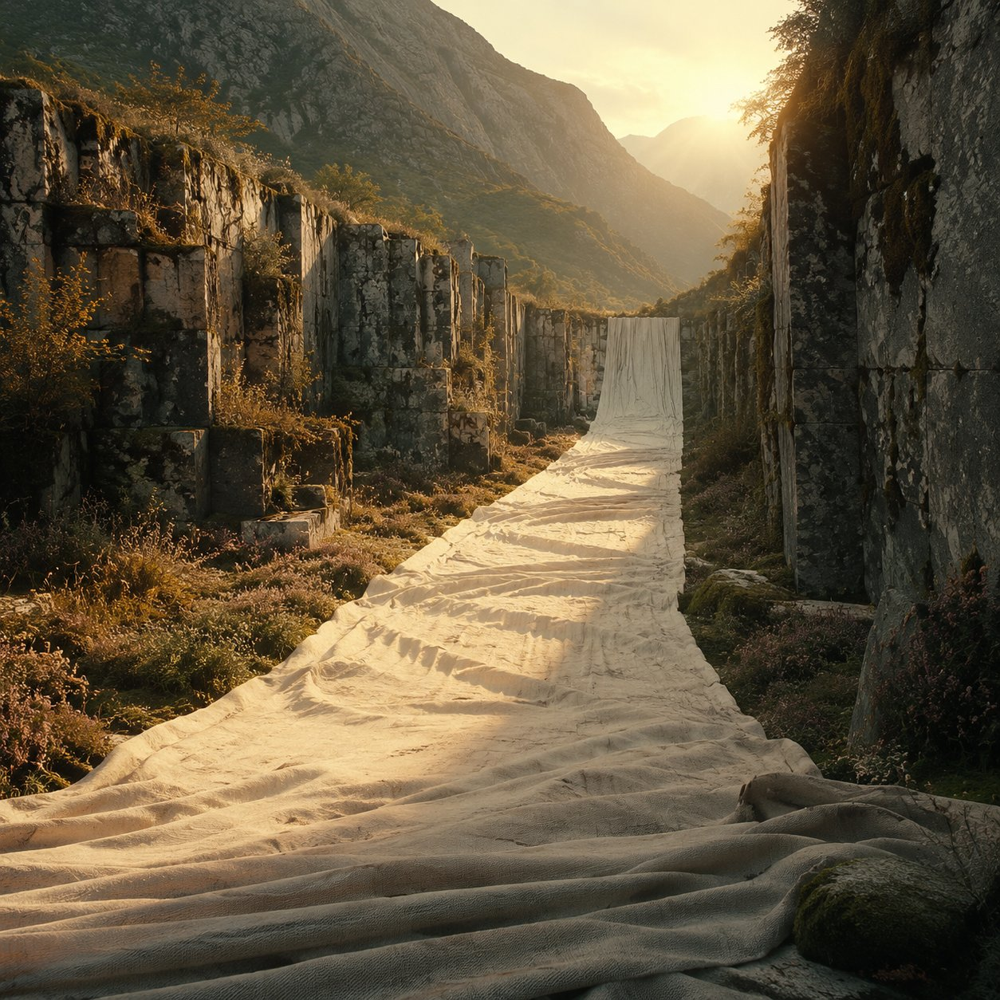

Nomadic experiential art institution2018—2026 / 32 Patrons
Original concept / Creative direction / AI-assisted build
坠入 REVERIE
不是先展示网页，
而是先让人进入世界。
源场景、世界索引与档案系统先建立观看语境；完整界面截图只在后段承担实现证明，不再承担全部视觉压力。
先读懂
我做了什么。
我提出 REVERIE 的原创概念、品牌世界观、信息架构、视觉方向与交互细节，并通过 AI 辅助的 vibe coding 工作流持续判断、修改和统一实现结果。
- Situation
- 让虚构艺术机构成为可进入、可浏览的数字场所。
- Task
- 组织森林入口、世界、工坊、沉浸体验与档案之间的访问路径。
- Ownership
- 原创概念、品牌世界观、内容架构、视觉方向、交互细节与最终判断。
- Boundary
- Open Design / AI 辅助实现；网站已经上线，尚未进行正式用户体验测试。
一个场景，
一种阅读任务。
入口负责建立场所感，档案负责解释规则，工坊负责补足机构质感，世界场景负责证明这套视觉语言能够持续生长。


世界不是卡片，
但需要一套索引。
源图以不同高度进入，保留每个世界的气候差异；名称、时间和状态只承担索引，不再覆盖在复杂截图之上。



截图只证明：
系统真的被组装出来。
观看者先理解世界观和视觉材料，完整界面截图才拥有语境。它只负责证明导航、索引和响应式布局确实存在。
创意已上线，
体验仍待验证。
最终版本托管于 GitHub，并通过 Netlify 公开上线，形成包含多个世界详情、工坊、档案与联系页面的响应式网站。当前成果证明这套 AI 辅助工作流能够把创意方向推进为可运行产品，但尚未进行正式用户体验测试。
ResultGitHub 托管并通过 Netlify 公开上线
Workflow原创方向判断与 AI 辅助实现闭环
Next验证入口理解、导航清晰度与加载性能